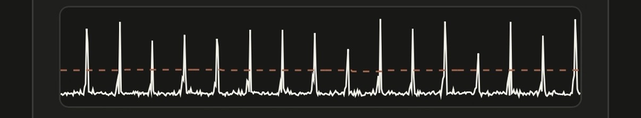

Kom i gangSådan måler du dit ur
Sådan måler du dit ur
En måling tager et halvt minut, hvis forholdene er gode. Tikket fra et armbåndsur er svagt, så det vigtigste er at give telefonen den bedste chance for at opfange det.
Find et stille sted
Telefonen hører alt: køleskabet, blæseren, trafikken udenfor og din egen vejrtrækning. Appen sorterer det værste fra, men jo mere stille, der er, jo hurtigere får du resultatet.
Et soveværelse eller et kontor med lukket dør er som regel bedre end køkkenet.
Læg uret det rigtige sted
Mikrofonen sidder typisk i bunden af telefonen ved siden af opladerstikket. Læg uret, så kassen rører mikrofonhullet. Det er ikke nok at lægge det midt på skærmen eller bagsiden.
Læg gerne telefonen på et håndklæde eller et viskestykke. Det dæmper rystelser fra bordet og reducerer støj.
Mange nyere iPhones har magneter midt på bagsiden. Hold uret væk derfra, så du ikke risikerer at magnetisere det.
Træk uret op
Et ur, der næsten ikke er trukket op, går anderledes end et fuldt optrukket ur. Træk et manuelt ur helt op. Et automatisk ur skal enten bæres i nogle timer eller trækkes op med kronen, før du måler.
Tryk Start, og vent
Når du trykker Start, beder telefonen om lov til at bruge mikrofonen. Kig derefter på lydniveauet under diagrammet: hvert tik skal nå tydeligt op over den stiplede linje.

Vent, til et helt målevindue er gået, som standard 10 sekunder. Statuslinjen melder, når målingen er stabil, og når appen har låst sig fast på urets takt.
Gem og vend uret
Tryk Gem, og vælg ur og stilling. Appen foreslår selv den næste stilling, så du hurtigt er klar til næste måling.
Når du vender uret, registrerer appen forstyrrelsen, holder pause og starter selv en ny måling, når uret ligger stille igen. Du behøver ikke trykke Nulstil.
Hvilke stillinger skal du måle?
Urmagere måler i op til seks stillinger: skive op, skive ned og kronen op, ned, til venstre og til højre. Mål mindst fire, så bliver appens vurdering mere brugbar.
Hvorfor uret går forskelligt afhængigt af stillingen, kan du læse i guiden her.
Når det driller
- Ingen tik registreres: Læg uret tættere på mikrofonen, eller sænk tærsklen lidt.
- Appen kan ikke fjerne al støj: Find et mere stille sted, eller hæv tærsklen.
- Tallene giver ingen mening: Tjek slagtallet, som appen sigter efter. Hører mikrofonen kun hvert andet tik, kan appen sigte forkert. Vælg det rigtige slagtal manuelt.
- Målingen er urolig: Vent et helt vindue mere, eller vælg et længere målevindue.
Følg trinene ovenfor, og aflæs de første tal på under et minut.